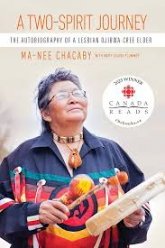
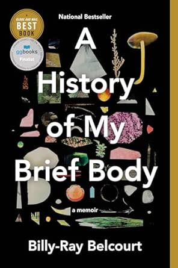
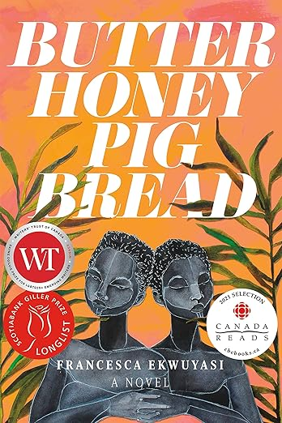

A Two-Spirit Journey: The Autobiography of a Lesbian Ojibwa-Cree Elder
From her early, often harrowing memories of life and abuse in a remote Ojibwa community, Ma-Nee Chacaby's extraordinary story is one of enduring and ultimately overcoming the social and economic legacies of colonialism. As a child, Chacaby learned spiritual and cultural traditions from her Cree grandmother and trapping, hunting, and bush survival skills from her Ojibwa stepfather. She also suffered physical and sexual violence, and in her teen years became an alcoholic herself. At twenty, Chacaby took her children and, fleeing an abusive marriage, moved to Thunder Bay. Despite the abuse, racism, and indifference she often found there, Chacaby marshalled the strength and supports to help herself and others. Over the following decades, she achieved sobriety, trained and worked as an alcoholism counsellor, raised her children and fostered many others, learned to live with visual impairment, and came out as a lesbian. In 2013, Chacaby led the first gay pride parade in Thunder Bay. Ma-Nee Chacaby has emerged from hardship grounded in faith, compassion, and humour. Her memoir provides unprecedented insights into the challenges still faced by many Indigenous people.

A History of My Brief Body
A slim but electrifying debut memoir about the preciousness and precariousness of queer Indigenous life. Opening with a tender letter to his kokum and memories of his early life on the Driftpile First Nation, Billy-Ray Belcourt delivers a searing account of Indigenous life that’s part love letter, part rallying cry. With the lyricism and emotional power of his award-winning poetry, Belcourt cracks apart his history and shares it with us one fragment at a time. He shines a light on Canada’s legacy of colonial violence and the joy that flourishes in spite of it. He revisits sexual encounters, ruminates on first loves and first loves lost, and navigates the racial politics of gay hookup apps. Among the hard truths he distills, the outline of a brighter future takes shape. Bringing in influences from James Baldwin to Ocean Vuong, this book is a testament to the power of language—to devastate us, to console us, to help us grieve, to help us survive. Destined to be dog-eared, underlined, treasured, and studied for years to come, A History of My Brief Body is a stunning achievement from one of this generation’s finest young minds.

Butter Honey Pig Bread
Butter Honey Pig Bread is a story of choices and their consequences, of motherhood, of the malleable line between the spirit and the mind, of finding new homes and mending old ones, of voracious appetites, of queer love, of friendship, faith, and above all, family. francesca ekwuyasi's debut novel tells the interwoven stories of twin sisters, Kehinde and Taiye, and their mother, Kambirinachi. Kambirinachi feels she was born an Ogbanje, a spirit that plagues families with misfortune by dying in childhood to cause its mother misery. She believes that she has made the unnatural choice of staying alive to love her human family and now lives in fear of the consequences of that decision. Some of Kambirinachi's worst fears come true when her daughter, Kehinde, experiences a devasting childhood trauma that causes the family to fracture in seemingly irreversible ways. As soon as she's of age, Kehinde moves away and cuts contact with her twin sister and mother. Alone in Montreal, she struggles to find ways to heal while building a life of her own. Meanwhile, Taiye, plagued by guilt for what happened to her sister, flees to London and attempts to numb the loss of the relationship with her twin through reckless hedonism. Now, after more than a decade of living apart, Taiye and Kehinde have returned home to Lagos to visit their mother. It is here that the three women must face each other and address the wounds of the past if they are to reconcile and move forward.